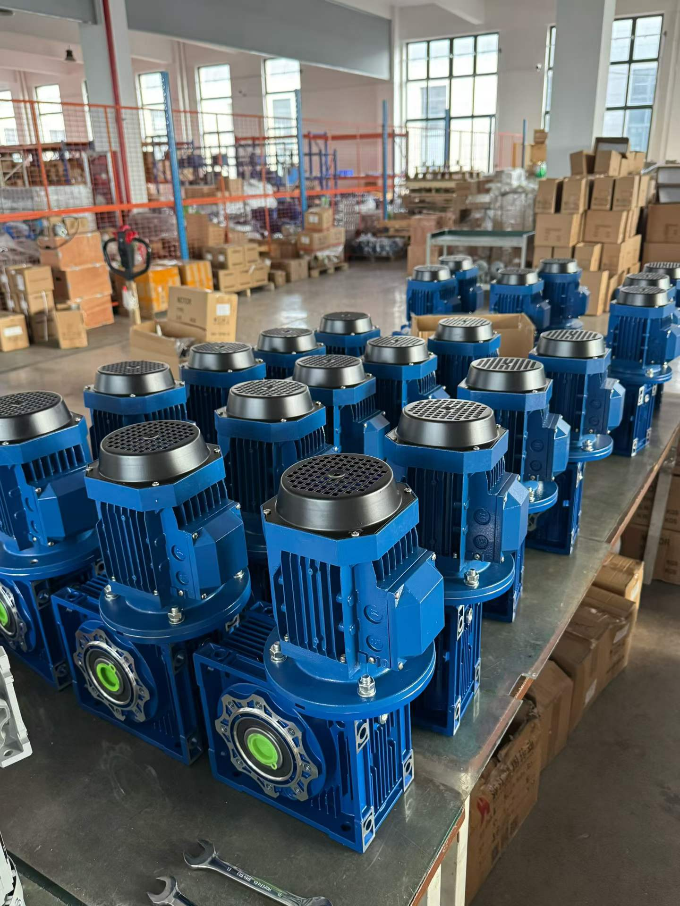

Industrial buyers searching for an NMRV worm gearbox manufacturer usually need more than a price list. The reducer must match the machine speed, torque, duty and installation space. This guide explains how to compare suppliers without duplicating the detailed calculations in our worm gearbox selection guide.
1. Confirm the NMRV product scope
Common NMRV-style frame sizes include 025, 030, 040, 050, 063, 075, 090, 110, 130 and 150. Common single-stage nominal ratios include 5, 7.5, 10, 15, 20, 25, 30, 40, 50, 60, 80 and 100. Not every frame, ratio, input flange and output option is interchangeable, so request confirmation for the exact combination.
| Item to confirm | Why it matters | Useful evidence |
|---|---|---|
| Frame and nominal ratio | Sets the basic speed range and capacity | Model code and catalogue data |
| Rated output torque | Must exceed design torque at the selected duty | Rating table and operating assumptions |
| Motor interface | Prevents IEC flange and shaft mismatch | Input flange and motor-frame dimensions |
| Output connection | Must fit the driven shaft or flange | Dimensioned drawing |
| Mounting position | Affects lubrication and installation | Mounting code and oil configuration |
| Environment | Dust, moisture and temperature affect suitability | Agreed enclosure and operating limits |
For the SMK range and available configurations, review the NMRV worm gearbox product page and the NMRV size guide from RV25 to RV150.
2. Check whether the manufacturer asks the right questions
A technically useful supplier should ask about motor power, input speed, required output speed, running and peak torque, operating hours, starts per hour, reversing, shock load, mounting position, shaft requirements and ambient conditions. Selecting only from motor power or ratio can miss thermal, service-factor and interface limits.
If the reducer will be supplied as a complete worm geared motor, confirm the motor voltage, frequency, phase, efficiency requirement, enclosure, mounting and terminal-box position. Motor power alone does not guarantee that the input shaft and flange match. The motor-to-gearbox matching guide explains the interface checks.
3. Verify ratio, speed and torque with a worked example
For a 1400 rpm motor and a required output speed of about 46.7 rpm:
Next, estimate output torque before comparing it with the manufacturer's rated value:
For a 0.75 kW motor, 46.7 rpm output and an assumed efficiency of 0.70 for a preliminary estimate, torque is about 107 Nm. Efficiency varies with ratio, size, load, speed, lubrication and temperature, so 107 Nm is not a catalogue rating. Apply the application service factor and verify both mechanical and thermal capacity using the selected manufacturer's data.
4. Review inspection, traceability and documentation
Ask what is checked before shipment and what documents can be supplied for the specific order. Depending on the project, relevant checks may include appearance, model and ratio verification, shaft rotation, mounting dimensions, motor nameplate data and packaging condition. Do not treat a generic marketing claim as evidence for a particular unit.
For replacement projects, send a clear nameplate photo, overall installation photos and critical dimensions. Ask for a dimensioned drawing before production when fit is important. For sample evaluation, define what will be checked: mounting fit, rotation direction, speed, noise, temperature under load and compatibility with the driven machine.
5. Compare quotations on the same basis
| Quotation field | What to compare |
|---|---|
| Exact model | Frame, ratio, input flange, output bore or shaft and accessories |
| Motor | Power, speed, voltage, frequency, frame, mounting and enclosure |
| Commercial scope | Reducer only or complete geared motor; sample or production quantity |
| Documentation | Drawing, catalogue data and agreed inspection records |
| Packaging and delivery | Export packaging, lead time, trade terms and destination |
The lowest unit price is not always the lowest project cost if an incorrect flange, shaft, ratio or mounting arrangement delays installation. Compare technically equivalent configurations and record assumptions in the quotation.
6. NMRV gearbox RFQ checklist
- Machine type and application
- Motor power, rated speed, voltage, frequency and IEC frame
- Required output speed or nominal ratio
- Required running torque and peak torque
- Operating hours per day, starts per hour and reversing
- Load type: uniform, variable or shock
- Mounting position and shaft orientation
- Output bore, solid shaft, flange or torque-arm requirements
- Ambient temperature, dust, moisture or washdown exposure
- Sample quantity, annual quantity and delivery destination
If replacing an existing unit, include the old gearbox nameplate, drawing and photos. SMK Transmission supports NMRV reducer selection, motor matching, mounting configuration, OEM requirements, samples and bulk orders. Send your application data for model confirmation and a quotation.
Frequently asked questions
What should I ask an NMRV worm gearbox manufacturer before ordering?
Provide the operating data and ask the manufacturer to confirm model, ratio, rated torque, motor interface, output dimensions, mounting and drawing.
Can an NMRV gearbox be supplied with a motor?
Yes. Confirm motor power, speed, voltage, frequency, IEC frame, flange, enclosure and duty together with the reducer.
What common NMRV sizes and ratios are available?
Common frames run from 025 to 150 and common single-stage ratios from 5:1 to 100:1. Availability and capacity vary by configuration.
Can I order a sample first?
Sample availability depends on the selected model and commercial terms. A sample can help verify fit and operation before a larger order.
Conclusion
A reliable NMRV sourcing decision is based on verified application data, a suitable rated configuration and clear documentation—not the model name alone. Compare suppliers using the same technical checklist, then validate the selected unit against the machine's speed, torque, duty and interfaces.